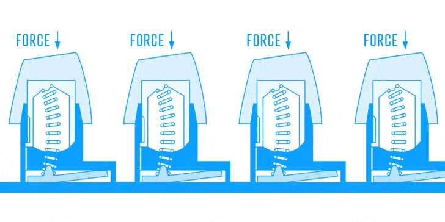
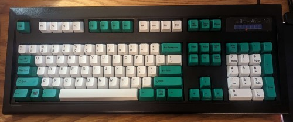

What is the best keyboard money can buy?
While some will argue any ole office keyboard will do, I'd argue this is a terrible recommendation. I would argue basically anything is better than your generic Dell rubber dome. However, there is one keyboard that stands above them all, and that is the IBM Model M.
What's so special about them?
Model Ms utilize a special kind of key switch known as a buckling spring switch

This differs from standard keyboards which commonly use either rubber domes or modern mechanical switches, which have significantly simplified (and yes, worse) mechanisms. You might be asking yourself why some typists still buy keyboards made in the 1980s when many newer designs are made, and the answer to that is that the buckling spring design is simply perfect. In sound, feel, and longevity, this keyboard simply can do it all. While many have tried to innovate the keyboard, these "innovations" are usually cost cuts in disguise, giving the user an inferior product. While to the majority of the world, the quality of modern desktop keyboards are adequate or not concidered at all, which is a shame in a modern throwaway culture.
While they might not be the best for gaming due to their heavy keytravel, it is safe to say that for standard typing and programming, there is simply no substitute for the pure euphoria that is typing on a Model M. Many examples have been clacked on for 40+ years and will likely continue to clack for another 40, if you spend hours per day behind a screen, why not make that daily experience more pleasant.
Why do I care?
I bought my brand new Unicomp Model M keyboard back in 2021 and have used it exclusively since then. I really like it, though it's loud noises tend to bother those around me, which is why in the past I have brought it to classes and coffee shops.
